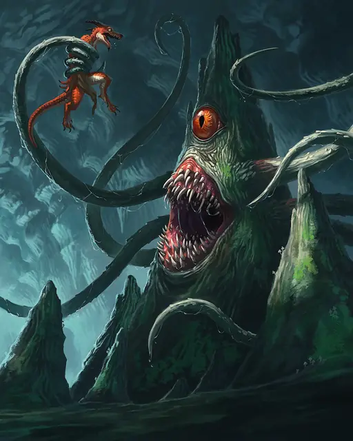

Верёвочник
Roper
Большая Аберрация, Нейтральная Злая

Класс Защиты 20 Инициатива +5 (15)
Хиты 93 (11к10 + 33)
Скорость 10 футов, Лазания 20 футов
| мод | спас | ||
|---|---|---|---|
| СИЛ | 18 | +4 | +4 |
| ЛОВ | 8 | −1 | −1 |
| ТЕЛ | 17 | +3 | +3 |
| мод | спас | ||
|---|---|---|---|
| ИНТ | 7 | −2 | −2 |
| МДР | 16 | +3 | +3 |
| ХАР | 6 | −2 | −2 |
Чувства Тёмное зрение 60 футов, пассивное Восприятие 16
Языки нет
Опасность 5 (1 800 опыта; БВ +3)
Особенности
Паучье лазание. Верёвочник может лазать по сложным поверхностям, включая потолки, без совершения проверок характеристик.
Действия
Мультиатака. Верёвочник совершает две атаки Щупальцем, использует Подтаскивание и совершает две атаки Укусом.
Укус. Бросок рукопашной атаки: +7, досягаемость 5 фт. Попадание: 17 (3к8 + 4) Колющего урона.
Щупальца. Бросок рукопашной атаки: +7, досягаемость 60 фт. Попадание: Цель Схвачена (Сл высвобождения 14) одним из шести щупалец, и пока длится захват, она Отравлена. Щупальце может быть повреждено, а Схваченное им существо освобождается, если щупальце уничтожено (КЗ 20, 10 Хитов, Иммунитет к Психическому урону и урону Ядом). Повреждение щупальца не наносит урон верёвочнику, а уничтоженное щупальце отрастает в начале следующего хода верёвочника.
Подтаскивание. Верёвочник притягивает каждое Схваченное им существо к себе на расстояние до 30 футов по прямой.
Бонус мастерства +3
Среда обитания Подземье
Сокровища Любые
Верёвочник
Подземный ловчий с щупальцами
Верёвочники — аберрантные ловчие, которые маскируются под скалы и поджидают в засаде мелких существ. Эти причудливые подземные охотники вытягивают свои эластичные щупальца, чтобы исследовать и ощупывать пространство за пределами их поля зрения. Встретив добычу, эти отростки заманивают жертву в ловушку и подтаскивает её к зубастой пасти верёвочника. Если щупальца отрубить, он вскоре отрастит новые.
Верёвочники могут перемещаться, хотя и делают это медленно. С помощью клейких ресничек, покрывающих нижнюю часть их тела, они могут ползать по стенам и держаться на потолках. Как правило, верёвочники выбирают для охоты непредсказуемые и опасные места или используют особенности местности, чтобы сделать свою добычу более уязвимой.
Совершите бросок по таблице «Опасность рядом с верёвочником» для вдохновения или выберите сами особенность местности, которой пользуется затаившийся верёвочник.
Опасность рядом с верёвочником
| 1к8 | Верёвочник тащит добычу через… |
| 1 | Область с ловушками. |
| 2 | Пещеру, наполненную дымом или газом. |
| 3 | Область дикой или мёртвой магии. |
| 4 | Логово существа, которое он хочет выманить. |
| 5 | Гнездо крыс, насекомых или других паразитов. |
| 6 | Участки бурой плесени или зелёной слизи. |
| 7 | Лужи магмы или кипящей воды. |
| 8 | Бритвенную лозу или другое опасное растение. |